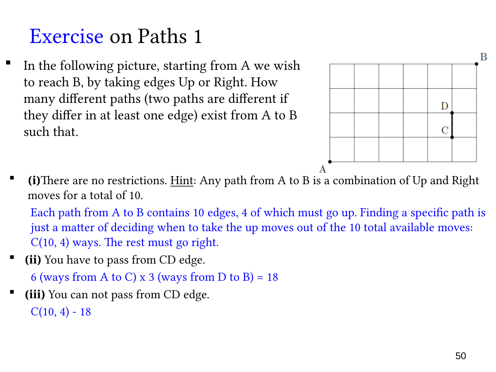

L1.6 · 第 50 页讲解原文
查看这一页课件

网格路径与指定边
图中取 A 为 (0,0)，B 为 (6,4)，每步只能向右 R 或向上 U。C 为 (5,1)，D 为 (5,2)，CD 是一条向上的指定边。
没有限制：必须走六步 R、四步 U，共十步。路径唯一对应其步序，选出四个 U 的位置即可：
C(10,4)=210.
必须经过 CD：路径唯一拆成 A→C、固定的 C→D、D→B 三部分。A→C 需五右一上，有 C(6,1)=6 条；D→B 需一右两上，有 C(3,1)=3 条。中间指定边只有一种，所以
6⋅1⋅3=18.
不能经过 CD：从全部路径减去经过指定边的路径：
210−18=192.
路径数使用组合，是因为每类步子相同，但它们在步序中的位置不同。只选 U 的位置就唯一确定完整路径，不需要再排列四个 U。
经过 C 并不等于经过 CD；从 C 向右也可能最终到 B。必须将指定边单独纳入分段，才能满足本题真正的限制。